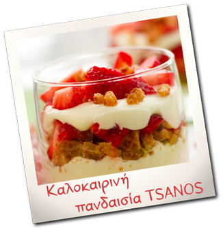

Ντιπ Πικάντικο TSANOS
Υλικά
- 1 πακέτο TSANOS κριτσίνια με φρέσκο τυρί*
- 1 πακέτο cottage cheese
- 1 ντομάτα χωρίς σπόρια κομμένη σε μικρά κομματάκια
- Λίγο πιπέρι
- Λίγο αλάτι
- Tabasco
Εκτέλεση
Ανακατεύουμε το cottage cheese με την ντοματα.
ρίχνουμε πιπεράκι, αλατάκι και όσο tabasco θέλουμε!
Ανοίγουμε ένα πακέτο κριτσίνια TSANOS με φρέσκο τυρί και ......βουτάμε!
* Η συνταγή μπορεί να συνοδευθεί με όλα τα προϊόντα TSANOS χωρίς ζάχαρη